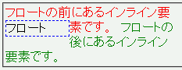
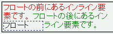

ソース中でインライン要素の間にある要素をフロートにしたとき、フロートが本来置かれるべき位置から下方にずれた位置に置かれる。このためフロートは、フロートの直前の行に含まれる内容の後に置かれてしまう。
<div style="width:14em;"> <span style="color:red;">フロートの前にあるインライン要素です。</span> <span style="float:left; width:5em; border:1px dashed blue;">フロート</span> <span style="color:green;">フロートの後にあるインライン要素です。</span> </div>
前景色が赤色のspan要素と、前景色が緑色のspan要素の間にあるspan要素をフロートにしています。
Opera7.11での表示（標準モード）
WinIE6.0での表示（標準モード）
リストアイテム要素に list-style-position: inside; を指定したリストアイテム要素内の先頭にあるフロートでこのバグは発生しません（WinIEバグ111参照）。ただし、WinIEはこの場合のリストマーカーをインライン要素として扱っていない可能性もあります。
WinIE5.5、WinIE6.0標準モード、WinIE6.0互換モードで不具合の発生を確認しました。